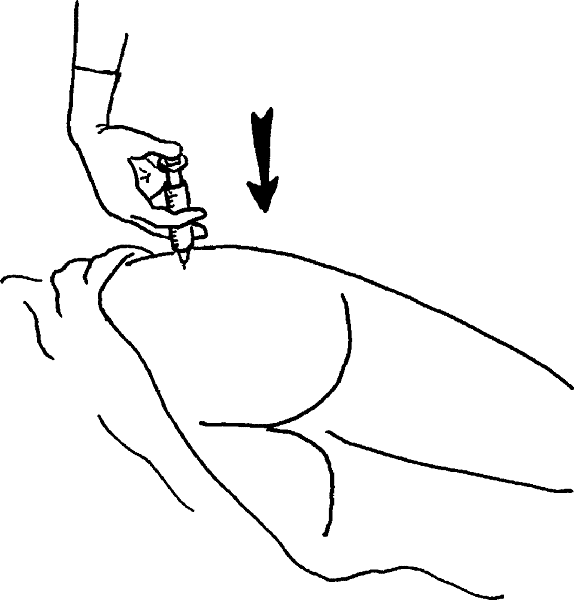

{% set pagetitle = "How to inject medicines
into muscle" %}
{% set seq_length = 7 %}
{% set seq_position = 7 %}
{% set seq_llink = "How_to_inject_medicines_into_muscle6.html" %} ## set rlink equal to next page href
{% set seq_rlink = "javascript:;" %} ## set llink equal to previous page href
{% extends "templates.jinja/base.page-with-sequence.html" %}
{% block title %} Hesperian - Pregnancy & Birth{% endblock %}
{% block id %}How_to_inject_medicines_into_muscle7{% endblock %}
{% block content %}
-  9. If no blood enters the syringe, slowly but steadily push the plunger in to inject the medicine into the muscle.
- 10. Pull out the syringe, and clean the skin again.
- 11. Immediately put the used syringe somewhere it cannot stick anyone.
{% endblock %}
{% block footer %}
{% endblock %}